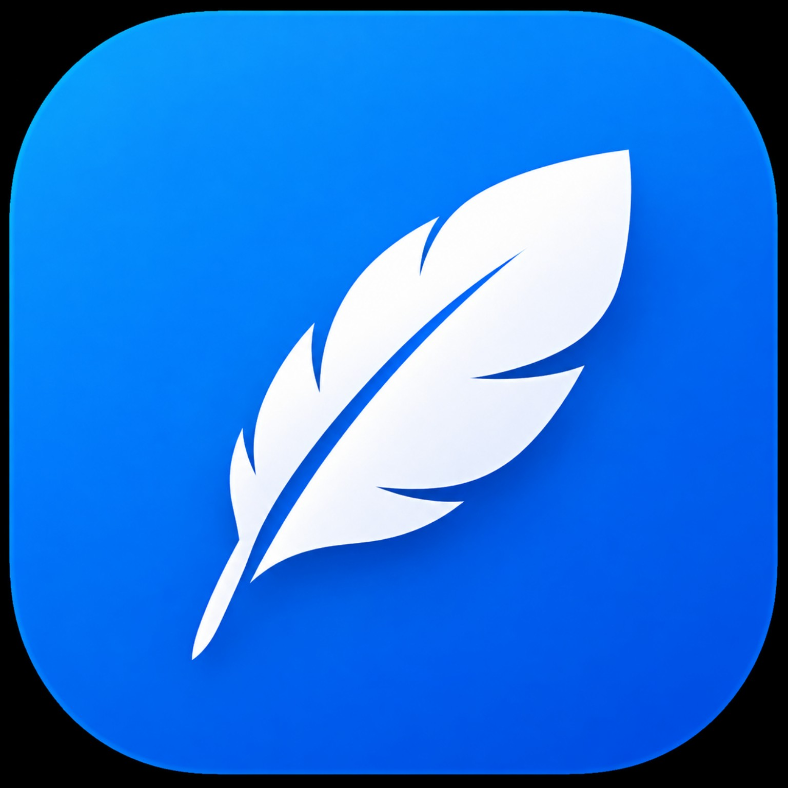

01 / ODAKLANMA
Focusia
Odaklanma oturumları, Pomodoro ve çalışma istatistikleri.
Microsoft Store'da yayımlandıMicrosoft Store'da görüntüle ↗Merhaba, ben Süleyman Ay. Günlük yaşamı kolaylaştıran, yaratıcı ve erişilebilir uygulamalar geliştiriyorum.
Geliştirdiğim ve üzerinde çalıştığım uygulamalar.
Odaklanma oturumları, Pomodoro ve çalışma istatistikleri.
Microsoft Store'da yayımlandıMicrosoft Store'da görüntüle ↗
Günlükler, anılar, notlar ve kişisel yaşamını düzenlemek için bir alan.
Mağaza süreci devam ediyorDijital kitap okuma deneyimine odaklanan bir uygulama.
Geliştirme aşamasındaPDF belgeleri ve ders kaynakları için planlanan üretkenlik araçları.
Planlama aşamasındaBen Süleyman Ay, bağımsız bir uygulama geliştiricisiyim. Eğitim, üretkenlik, kişisel düzen ve okuma alanlarında projeler geliştiriyorum. Hedefim işlevsel, özenli ve herkes için erişilebilir dijital deneyimler üretmek.
Uygulamalar hakkında soru, öneri ve destek taleplerin için e-posta gönderebilirsin.
hello@suleymanay.com ↗Lütfen destek mesajında uygulama adını ve yaşadığın sorunu belirt.